UDN
Search public documentation:
MainEditorToolboxJP
English Translation
中国翻译
한국어
Interested in the Unreal Engine?
Visit the Unreal Technology site.
Looking for jobs and company info?
Check out the Epic games site.
Questions about support via UDN?
Contact the UDN Staff
中国翻译
한국어
Interested in the Unreal Engine?
Visit the Unreal Technology site.
Looking for jobs and company info?
Check out the Epic games site.
Questions about support via UDN?
Contact the UDN Staff
メイン エディタのツールボックス
概観
Editor Modes（エディタモード）
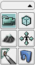
このエリアのツールでは、エディタの編集モードを変更できます。Camera Mode（カメラ モード）
 エディタがデフォルトのCamera Mode（カメラ モード）に切り替わり、アクタの追加、選択、変更が可能になります。
エディタがデフォルトのCamera Mode（カメラ モード）に切り替わり、アクタの追加、選択、変更が可能になります。
Geometry Mode（ジオメトリ モード）
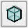
エディタがGeometry Mode（ジオメトリ モード）に切り替わり、ビューポートで変形ツールを使用して CSG ブラシを編集できる Geometry Modeウィンドウが開きます。 このモードの使用方法の詳細は、Getting Started with geometry Mode ページを参照してください。Terrain Editing Mode（地形編集モード）
 エディタがTerrain Editing Mode（地形編集モード）に切り替わり、Terrain Editor（地形エディタ）ウィンドウが開きます。
このモードの使用方法の詳細は、Terrain Editor User Guide を参照してください。
エディタがTerrain Editing Mode（地形編集モード）に切り替わり、Terrain Editor（地形エディタ）ウィンドウが開きます。
このモードの使用方法の詳細は、Terrain Editor User Guide を参照してください。
Texture Alignment Mode（テクスチャ調整モード）
 エディタがTexture Alignment Mode（テクスチャ調整モード）に切り替わります。このモードでは、CSG 表面におけるテクスチャの展開、回転、拡大縮小を、ビューポートでインタラクティブに変更できます。
エディタがTexture Alignment Mode（テクスチャ調整モード）に切り替わります。このモードでは、CSG 表面におけるテクスチャの展開、回転、拡大縮小を、ビューポートでインタラクティブに変更できます。
Mesh Paint Mode（メッシュ ペイント モード）
 エディタがMesh Paint Mode（メッシュ ペイント モード）に切り替わります。このモードでは、メッシュ上の頂点の色を、エディタのビューポートでインタラクティブに変更できます。
このモードの使用方法の詳細は、Mesh Paint Reference ページを参照してください。
エディタがMesh Paint Mode（メッシュ ペイント モード）に切り替わります。このモードでは、メッシュ上の頂点の色を、エディタのビューポートでインタラクティブに変更できます。
このモードの使用方法の詳細は、Mesh Paint Reference ページを参照してください。
Static Mesh Mode（スタティック（静的）メッシュ モード）
 エディタがStatic Mesh Mode（スタティックメッシュ モード）に切り替わります。このモードでは、拡大縮小および回転の最大値や最小値を使用し、多数の同様のスタティック メッシュを簡単に置換できるため、マップに「散乱物」を追加するなどの処理を簡単に実行できます。
エディタがStatic Mesh Mode（スタティックメッシュ モード）に切り替わります。このモードでは、拡大縮小および回転の最大値や最小値を使用し、多数の同様のスタティック メッシュを簡単に置換できるため、マップに「散乱物」を追加するなどの処理を簡単に実行できます。
ブラシのプリミティブ
 このエリアのボタンは、設定可能なプリセット（プリミティブ形状）を利用してビルダ ブラシの形状を変更する際に使用します。このエリアの任意のボタンを右クリックすると、プリミティブ設定を自由に変更できるプロパティ ダイアログが表示されます。左クリックすると、現在のビルダ ブラシが、設定内容が反映された新しいプリミティブ形状に変更されます。
このエリアのボタンは、設定可能なプリセット（プリミティブ形状）を利用してビルダ ブラシの形状を変更する際に使用します。このエリアの任意のボタンを右クリックすると、プリミティブ設定を自由に変更できるプロパティ ダイアログが表示されます。左クリックすると、現在のビルダ ブラシが、設定内容が反映された新しいプリミティブ形状に変更されます。
キューブ
 キューブ（箱型ブラシ）を作成します。これは、部屋などをビルドする際に使用し、特に開発の初期段階でエリアの分割やフローのテストに利用します。
キューブ（箱型ブラシ）を作成します。これは、部屋などをビルドする際に使用し、特に開発の初期段階でエリアの分割やフローのテストに利用します。
コーン
 一方の端が 1 点に集約した形状のコーン型ブラシを作成します。
一方の端が 1 点に集約した形状のコーン型ブラシを作成します。
カーブ階段
 カーブした階段の形状をしたブラシを作成します。注意：このような形状には、通常はスタティック メッシュを使用することをお勧めします。
カーブした階段の形状をしたブラシを作成します。注意：このような形状には、通常はスタティック メッシュを使用することをお勧めします。
シリンダー
 円形の部屋、パイプ、柱などに使用するシリンダー型のブラシを作成します。
円形の部屋、パイプ、柱などに使用するシリンダー型のブラシを作成します。
直線階段
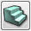
直線の階段の形状をしたブラシを作成します。注意：このような形状には、通常はスタティック メッシュを使用することをお勧めします。シート
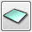
平面の四角ブラシを作成します。プレーヤーやジオメトリに対して、衝突したり、妨害したりしません。螺旋階段
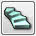
螺旋階段の形状をしたブラシを作成します。注意：このような形状には、通常はスタティック メッシュを使用することをお勧めします。四面体（球体）
 全体が三角形で構成された球体のブラシを作成します。またジオメトリとしては、非常に複雑または密度の高い表面を形成することもできます。注意：BSP ブラシは、エラーの発生を回避するためにシンプルな形状にとどめておく必要があるため、このようなジオメトリに対しては、スタティック メッシュを使用してください。
全体が三角形で構成された球体のブラシを作成します。またジオメトリとしては、非常に複雑または密度の高い表面を形成することもできます。注意：BSP ブラシは、エラーの発生を回避するためにシンプルな形状にとどめておく必要があるため、このようなジオメトリに対しては、スタティック メッシュを使用してください。
カード
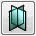
このプリミティブでは、中心軸を基準に回転した複数のシートが作成されます。これは、完璧なディテールよりパフォーマンスが重要視される状況で、火炎、煙、プラズマ、樹木、チェーンなど、各種のテクスチャ エフェクトに利用できます。CSG 演算
 このエリアのツールでは、BSP ワールドのジオメトリのビルドに必要な CSG（Constructive Solid Geometry）演算を実行できます。
このエリアのツールでは、BSP ワールドのジオメトリのビルドに必要な CSG（Constructive Solid Geometry）演算を実行できます。
加算
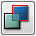
現在のビルダ ブラシから加算ブラシを新規作成します。減算
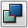
現在のビルダ ブラシから減算ブラシを新規作成します。交差
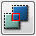
現在のビルダ ブラシで囲まれたすべての交差からブラシを作成し、ビルダ ブラシを新しいブラシに交換します。非交差
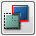
現在のビルダ ブラシで囲まれたすべての非交差からブラシを作成し、ビルダ ブラシを新しいブラシに交換します。追加ブラシ
 このエリアのツールでは、現在のビルダ ブラシを利用して特殊ブラシおよびボリュームをレベルに追加できます。
このエリアのツールでは、現在のビルダ ブラシを利用して特殊ブラシおよびボリュームをレベルに追加できます。
特殊ブラシの追加
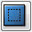
現在のビルダ ブラシを利用して新規の特殊ブラシ タイプを追加するための [Add Special Brush]（特殊ブラシの追加）ダイアログが開きます。ボリュームの追加
 右クリックしてリストから選択し、新規のボリューム ブラシ タイプを作成します。
右クリックしてリストから選択し、新規のボリューム ブラシ タイプを作成します。
選択と可視エリア
 このエリアのツールでは、ビューポートに表示される項目を設定し、選択内容を変更できます。
このエリアのツールでは、ビューポートに表示される項目を設定し、選択内容を変更できます。
選択されているアクタのみ表示
 選択されているアクタを除き、マップ内のすべてのアクタを非表示にします。
選択されているアクタを除き、マップ内のすべてのアクタを非表示にします。
選択されているアクタを非表示
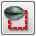
選択されているアクタをすべて非表示にします。選択項目の反転
 選択されているアクタをすべて選択解除し、選択されていなかったアクタを選択します。
選択されているアクタをすべて選択解除し、選択されていなかったアクタを選択します。
すべてのアクタを表示
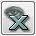
非表示になっているアクタを表示し、すべてのアクタが可視状態になります。